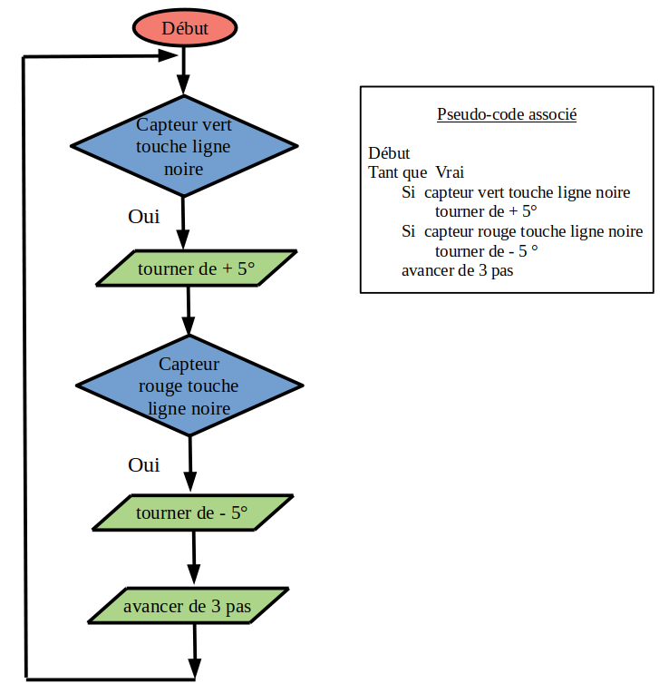

Voici un exemple de système informatique : un robot suiveur de ligne, avec deux capteurs, programmé avec scratch.
On clique d'abord sur le drapeau vert, puis le robot se déplace automatiquement en suivant la ligne noire.
L'objectif est de programmer le robot pour qu'il suive la ligne noire.
Pour cela, il faut suivre la procédure suivante :
Cliquer sur le bouton en haut à droite Voir à l'intérieur : .
Agencer les blocs sélectionnés du sprite Robot, pour programmer ce robot suiveur de ligne.
Le robot doit suivre la ligne noire.
Une fois le programme agencé, cliquer sur le drapeau vert et vérifier que le programme fonctionne correctement.
On rappelle que le sens positif des mesures d'angles est le sens de rotation inverse des aiguilles d'un montre. Et le sens de rotation des aiguilles d'une montre est le sens négatif des mesures d'angles.

Saisir dans la zone ci-dessous, le message affiché quand le robot a terminé son premier tour.